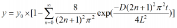

非線形曲線フィットの実行時にPython関数を使用できます。Python関数と、その関数に必要なPythonパッケージをインストールするためのスクリプトコマンドを含むフィット関数ファイル（FDFファイル）を作成する必要があります。
次のサンプルで、Python関数を使用してFDFを作成する方法の概要を示します。
このセクションでは、Pythonを関数を使って次の質量拡散方程式のフィッティング関数を作成する手順の概要を説明します。

MassDiffuse(x, y0, D, L)
のように関数式編集ボックスに入力します。
[PythonV] from mpmath import nsum, exp, inf import numpy as np def MassDiffuse(x, y0, D, L): sm = [float((nsum(lambda ii: 1/(2*ii+1)**2*exp(-D*(2*ii+1)**2*np.pi**2*t/(4*L**2)),[0, inf]))) for t in x] return [y0*(1-8/np.pi**2*t) for t in sm]
[BeforeInstall]
if(Python.chk("mpmath numpy") > 1)
return 1;
return 0;
0.00 -0.078 0.20 0.604 0.40 0.842 0.60 1.101 0.80 1.029 1.00 1.083 1.20 0.828 1.40 0.884 1.60 0.991 1.80 1.005 2.00 0.915
パラメータの初期値には以下を入力します。
y0 = 1, D = 0.5, L = 0.5
そしてフィットを実行します。最終的なパラメータ値は以下の通りです。
フィット値: y0 = 0.97846, D = 0.37563, L = 0.43781